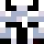
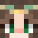
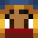
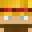
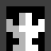
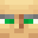

NPCs
NPCs
The NPCs of LivingWild are 12 villagers with personality, their own skin, dialogue and trades. They are not vanilla villagers: they have their own conversation screen.
Interaction
Right-click an NPC to open the dialogue screen. Options:
- “Tell me more” → another line from their repertoire.
- “What are you selling?” → their list of trades (click a trade to buy it; the items are taken from your inventory).
- “Hire: 32 emeralds” → they join you as a companion (all except the Fairy).
- “Follow me / Stay here” and “Dismiss” (only with your companion).
- “Goodbye”.
The 12 NPCs
| Face | NPCs | Type | Role |
|---|---|---|---|
 | Knight | Guardian | Protector of the road; carries the Dawnblade in legend. |
| Wizard | Civilian | Master of runes and tutor of petronite; his staff is the Arcane Staff. | |
 | Fairy | Civilian | Voice of the forests and guardian of the Fairy Heart. |
 | Traveling Merchant | Civilian | Trades emeralds, gold and Ender pearls. |
| Blacksmith | Guardian | Forges iron swords, chestplates and shears. | |
| Archer | Guardian | Sells arrows and bows. | |
 | Farmer | Civilian | Swaps wheat and potatoes for food. |
| Alchemist | Civilian | Exchanges redstone and glowstone for bottles of experience and fermented eyes. | |
| Bard | Civilian | Tells stories and sells music. | |
 | City Guard | Guardian | Defends the city; carries the Stormaxe. |
| Player | Civilian | One more traveler, sells meat and bread. | |
 | Monk | Civilian | Offers golden apples and honey. |
Common attributes
- Health: 40 · Damage: 3 · Speed: 0.3 · Hitbox: 0.6 × 1.8 (the Fairy: 0.8 × 2.0)
- The nameplate shows what they say: every ~15–30 s they say a line above their head (in yellow).
- The Guardians (Knight, Guard, Archer, Blacksmith) attack nearby monsters.
- The Civilians can walk to a nearby chest, open it and close it with sound (taking nothing), and pair up to “chat”.
- The same type does not exceed 8 NPCs per chunk (configurable).
Where to find them
- In the Medieval House (merchant, blacksmith and fairy) and the Castle on the Moon (wizard, knight and fairy).
- With their spawn egg in the creative tab.
Configuration
See Configuration to change trades, disable types or adjust the hiring cost.
See also: NPC Quotes
Categories: NPCs